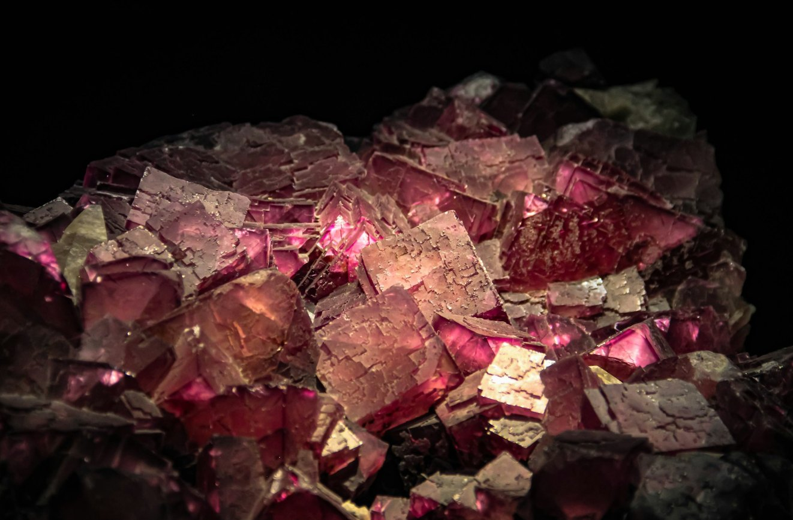
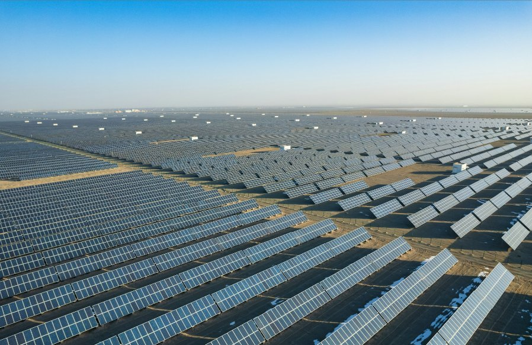
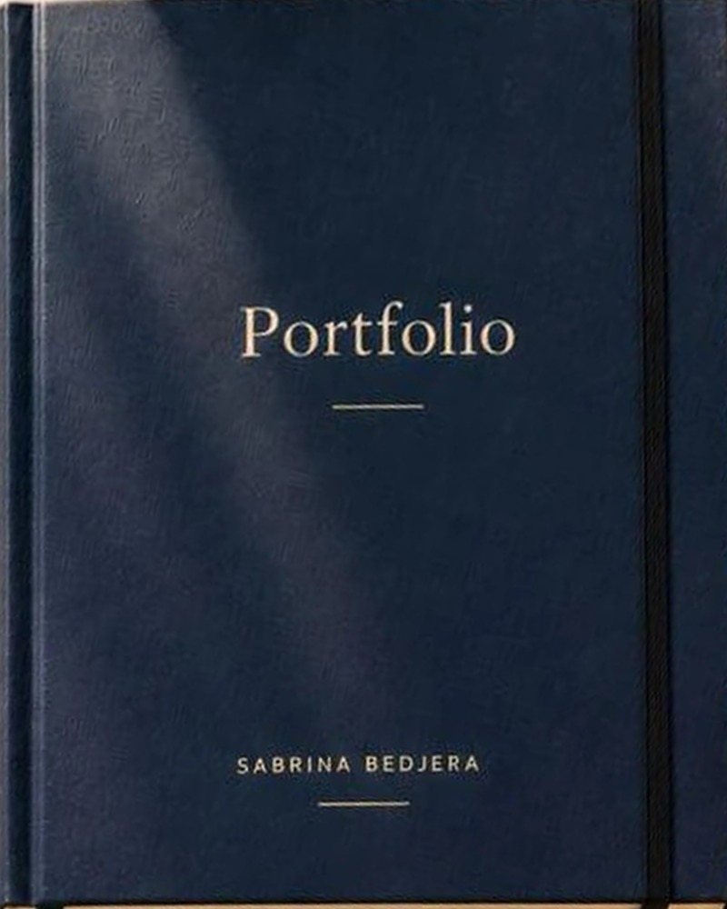

Selected WorkIssue 01
CriticalMinerals
Investment & Commercialization
Technology · Investment · Strategy
I work at the intersection of technology, investment and strategy to advance complex energy and technology projects from ideas toward real‑world impact.
Selected work · 01—03
Three case studies presented as a small collection of independent publications. Open any cover to read its case study.

Investment & Commercialization
Data Visualization

Technology & Innovation
02
Master’s research modelling micropollutant degradation during drinking water ozonation. Awarded the American Water Works Association first-place Master’s Academic Achievement Award.
Engineering and policy research with the University of Waterloo’s forWater Network, including a climate adaptation assessment framework.
Technical and policy analysis on intellectual property, artificial intelligence and climate-related technologies, including development of performance indicators and organization of NRCan’s inaugural IP conference.
Led data management and qualitative analysis work at Ontario Tech University using NVivo and structured research datasets.
03
Nov 2022 – present
Critical Minerals Centre of Excellence
Evaluation of advanced clean energy and critical minerals projects; funding assessments and agreement development.
Jan 2022 – Nov 2022
Carbon Capture Division
Carbon management initiatives, including Canada’s Carbon Management Strategy and International Energy Agency CCUS handbooks.
Oct 2020 – Jan 2022
Intellectual Property Division
Technical and policy analysis on intellectual property, AI and climate-related technologies; performance indicators; NRCan’s inaugural IP conference.
Feb 2019 – Jul 2020
forWater Network
Engineering and policy research on water security, including a climate adaptation assessment framework.
Sep 2015 – Feb 2019
Data Management Lead
Research data management and qualitative analysis using NVivo and structured research datasets.
04
Water specialization · University of Waterloo
Ontario Tech University
Ontario Tech University
05
I started in science and mathematics, trained as a teacher, and went on to engineering research on drinking water treatment.
That path taught me to look closely at how things actually work: the chemistry, the data, the people who will use the result. It is also what I bring to my work at Natural Resources Canada, where I have moved from intellectual property and emerging technology to carbon capture and, now, critical minerals and clean energy investment.
The questions I enjoy most sit between disciplines. Is a technology ready? Is the market? Does a project fit the bigger strategy, and what would it take to move it forward? I like turning complex technical and economic information into something clear enough to act on.
06
Interested in working together or talking about energy, technology and investment? I’d be glad to hear from you.

Sabrina Bedjera
Selected work in technology, investment and strategy.
Sample pages for review [edition / year]
Contents
Every project detail in these sample pages is a placeholder, shown in [brackets].
i
01 · Energy & technology
Project 01 — Energy & technology
[Two or three sentences: the problem, who it mattered to and why.]
2
01 · Energy & technology
3
02 · Data visualisation
Project 02 — Data visualisation
4
02 · Data visualisation
[The question the visualisation answers.]
[How the data was gathered, cleaned and analysed.]
[What the visual revealed and who used it.]
[Link to live project or repository]
5
03 · Strategy & investment
Project 03 — Strategy & investment
[One-sentence summary of the decision this work supported.]
Figure 3.1 — [Placeholder process diagram; replace with the real framework]
6
03 · Strategy & investment
| Option | Assessment | Risk |
|---|---|---|
| [Option A] | [Summary] | [Low / Med / High] |
| [Option B] | [Summary] | [Low / Med / High] |
| [Option C] | [Summary] | [Low / Med / High] |
[What was recommended and why.]
[What happened next — decision, funding, deployment.]
7
More work
Further projects will be added here as the full portfolio is built.
8
Contact
Interested in a project or a conversation about energy, technology and investment?
[CV download link]
9
Natural Resources Canada · Investment strategy
Project evaluation, commercial negotiations and new federal investment approaches to strengthen Canada’s critical minerals supply chains.
Critical Minerals Investment & Commercialization
Coordinated multidisciplinary technical, financial and commercial assessments of critical minerals and clean energy projects, supporting investment decisions across federal funding programs with a combined $3.5 billion investment envelope.
Evaluated project economics, technical feasibility and commercial considerations, and worked with industry partners and teams of engineers, geologists, lawyers and financial specialists to negotiate and finalize the Government of Canada’s first critical minerals offtake agreements with Nouveau Monde Graphite and Rio Tinto.
Shaped the design of the Canada Critical Minerals Accelerator, applying lessons from the first offtake negotiations to investment strategies, project assessment processes and financing approaches.
Developed interactive Power BI dashboards to visualize project pipelines, track funding allocations and support strategic investment decisions.
Project material
Project image, chart or diagram to be added.
Supporting document or excerpt to be added.
Further reading
Independent project · Data visualization
An independent data visualization project combining quantitative analysis and interactive storytelling to explore electricity access, energy generation and investment needs across Pacific Island countries.
Flourish visualizations will appear here.
Pacific Renewable Energy Data Visualization
Analyzed publicly available energy datasets to compare electricity access, renewable energy deployment and energy transition challenges in Papua New Guinea and Tonga.
Designed and developed interactive visualizations using Flourish and Excel, turning complex energy datasets into accessible charts and a cohesive digital experience.
Showed how different national conditions call for tailored strategies: expanding electricity access in Papua New Guinea and reducing oil dependence in Tonga, with investment a shared requirement. The country-specific transition pathways draw on a World Bank report.
Project material
Project image, chart or diagram to be added.
Supporting document or excerpt to be added.
Further reading
Natural Resources Canada · Research & collaboration
Strategic research, international collaboration and technical analysis supporting Canada’s engagement in energy innovation and carbon management.
Clean Energy Technology & Innovation
Contributed technical and policy research to Canada’s Carbon Management Strategy, supporting federal priorities for carbon capture, utilization and storage (CCUS).
Supported Canada’s participation in the International Energy Agency’s Committee on Energy Research and Technology (CERT): technical analyses, Canadian positions and coordinated contributions to international discussions.
Reviewed technical information and contributed Canadian regulatory context to IEA CCUS handbooks, including the Legal and Regulatory Framework for CCUS, with formal acknowledgment in the publication.
Project material
Project image, chart or diagram to be added.
Supporting document or excerpt to be added.
Further reading